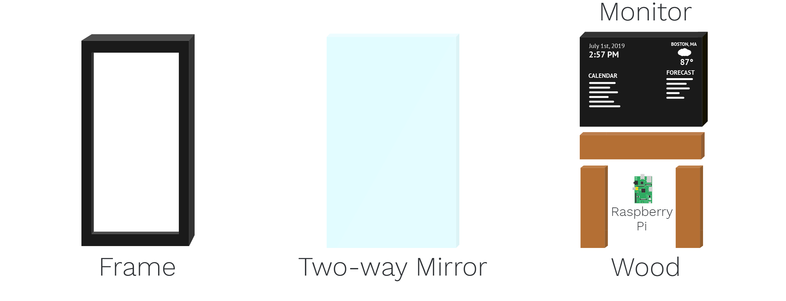

The Smart Mirror is a mirror with a futuristic display of widgets that includes the time, weather, week-long forecasts, and upcoming events synced with Google Calendar.
How it works
A two-way mirror, commonly known for its use as one-way glass in interrogation rooms, reflects like a normal mirror in the absence of light. However, when white light is pressed directly against the glass, it is able to shine through.
With this in mind, I developed a software to create the Smart Mirror. Running on a Raspberry Pi, the program displays widgets on a monitor in the form of white text with a black background.
By holding the monitor up with wood and running the software behind the mirror and frame, I created a "smart" mirror effect.
Design Process
I divided the project into four stages:
- Design
- Development
- Woodwork
- Integration
1. Design
I first had to decide what features I wanted to implement into the Smart Mirror. To do this, I listed things that would make my morning more efficient by having all of the information in one place to reference:
- Checking the time
- Looking at the weather and temperature outside
- Going through my calendar to see what meetings/events I have for the day
The last thing most people can do in the morning is waste time, as they rush to their first class or to catch the train to their commute. Having all of this information accessible at a quick glance streamlines their mornings exponentially.
Using Photoshop, I designed a general outline of what the software would look like, with a rough idea of how it would work.

2. Development
Initially, I struggled in deciding whether to develop the software in Java or Javascript. I decided on Javascript because the front end of this application would be more smoothly designed with HTML and CSS in a locally hosted browser. Additionally, the front end would be much easier and more versatile in terms of design.
The application would run on my Raspberry Pi's Raspbian OS.
To generate the weather data, I fetch JSON data from a weather API, known as Dark Sky API. In my Javascript code, I parse the JSON data into an invisible table that is displayed on the right side of my mirror.
3. Woodwork
In order to maintain the mirror look, I had to make two frames: one for the inside and one for the outside
The outside frame was the front frame that was visibile to everyone. This was to emulate the actual mirror frame appearance.
The inside frame was hidden and its purpose was to hold the mirror in place.

After gluing and nailing the wood together, I spray-painted the frame black, as seen in the above picture.
I then glued a blackout curtain to the bottom half of the frame to ensure that, in the case of leakage of light from the monitor, the mirror would still remain perfectly reflective.
4. Integration
In order to bring the "magic" to the mirror, I had to actually install the Raspberry Pi into the mirror.
I plugged in the necessary wires and connected everything. However, one issue I ran into was that the Raspberry Pi was very processor dependent, so it would overheat a few minutes after running. To fix this, I installed a heat sinks on the processor.


Overall, I am thrilled with the end result of the Smart Mirror. I have not experienced any glitches with it, and I use it every day. Additionally, I accomplished all the goals I set out to, namely utilizing my newfound programming skills, following through and sticking with a project to completion, and contributing a great piece of furniture to my college living room!
In the future, I would like to consider implementing a motion sensor for the mirror to turn on whenever I walk by. I would also like to possibly integrate the abilities of Amazon Alexa into the Smart Mirror as well.